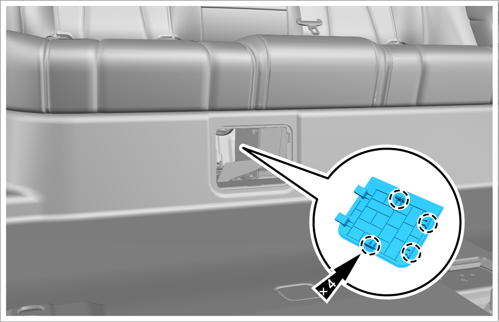
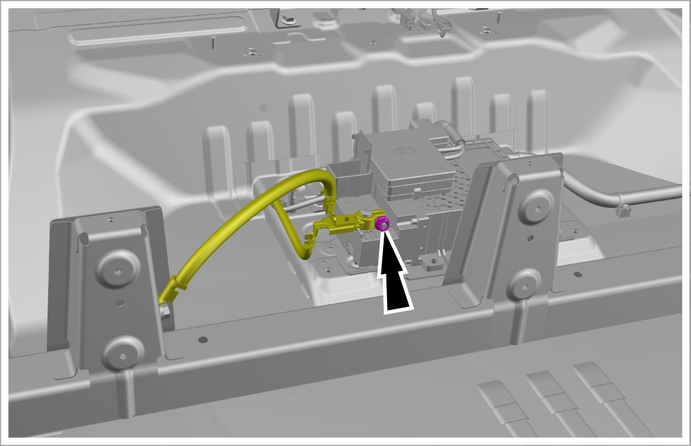

Power-off and power-on of low-voltage electrical system

-
Situation in which low voltage electrical system power off must be performed: Before repairing any electrical component, low voltage electrical system power off must be performed following the requirements below, and low voltage electrical system power on must be performed after the repairment, unless otherwise specified in the operation procedure.
-
Low voltage electrical system power off is also required if the tool or device is easily accessible to the start iron battery poles and cable connectors.
-
Violation of these safety warnings may result in personal injury or vehicle damage.
Power-off of low-voltage electrical system 3D animation demonstration
-
Turn off all electrical appliances, and the power supply of the vehicle (by pressing the "START/STOP" button).
-
Detach 4 fixing clips with a plastic pry plate and take out the carpet access cover.

-
Unscrew 1 tightening nut and disconnect the negative cable of 12 V battery.
-
Tightening torque: 9±1 N•m
Caution
After the negative cable joint is disconnected, the negative terminal of 12 V battery must be insulated and packaged to prevent it from contacting other metals in the vehicle and causing circuit safety hazards.

-
Power-on of low-voltage electrical system
-
Before power-on, make sure that the electrical circuits of the vehicle are well connected and there is no flammable or explosive article near the negative terminal of 12 V battery.
-
Install other components in the reverse order of removal.
-
After terminals of 12 V battery are disconnected, the vehicle may be in a sleep mode. After negative cable joint is installed, the vehicle needs to be awakened by pressing the microswitch on the driver's door handle twice continuously.
Reminder After long-term storage, the start iron battery may also enter the hibernation state. The same method must be used to wake up the sleeper before connecting the vehicle power supply.
After long-term storage, the start iron battery may also enter the hibernation state. The same method must be used to wake up the sleeper before connecting the vehicle power supply. -
After wake-up, power on the vehicle (by pressing the "START/STOP" button to switch the power supply to OK mode), and check that the electric appliances of the vehicle are functioning normally. In this case, the low-voltage electrical system of the vehicle has been powered on.
CautionIf the start iron battery has power loss, the low voltage electrical system of the vehicle may not be powered on normally. At this time, eliminate the power loss fault of the start iron battery first, and then power on again.